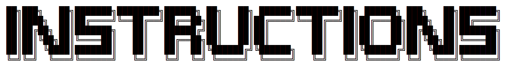

BACK


Instructions
Opener
● Application name is opener.bat
● All images are in "Pictures" folder
● All images are in ASCII format
● To see picture just write file name (without dot)
● You can put your .txt files into folder and run it
Word 2
● Application name is word2.bat
● All documents are in "document" folder
● All documents can be any format
● To see documents use reader.bat
● You can put your files into folder and run it
Reader
● Application name is reader.bat
● All documents can open with reader.bat
● All documents must be written with format
● You can put your files into folder and run it
Calculator
● Application name is calculator.bat
● To use it just write your expression
Console

● Console is Windows application
● To run console write /cmd
P.S. Main OS folder might be in the Desktop